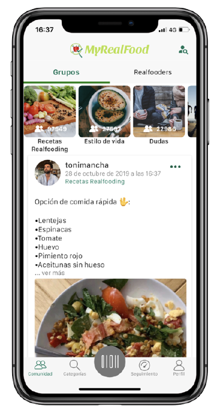
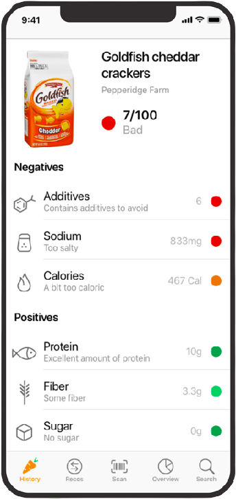
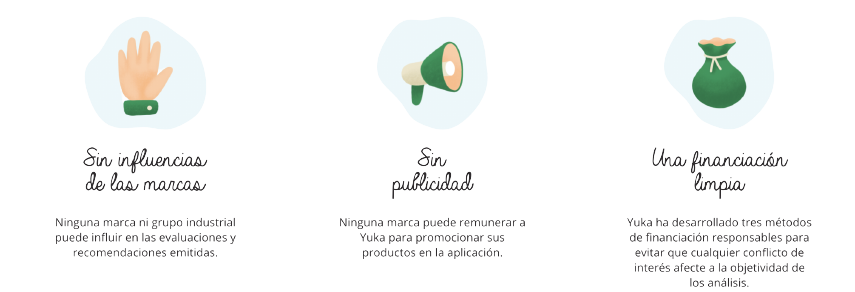

MyRealFood o Yuka, más que apps, son un movimiento a favor de la alimentación saludable
Version 4.3.25
MyRealFood es una app móvil que permite conocer la calidad nutricional de los alimentos (escaneando el código de barras del producto o buscándolo en la base de datos para conocer su calificación). Además lleva un registro para conseguir tus objetivos de salud y utiliza una comunidad para mantenerte motivado.
• Funcionalidades
Se habla de que es “como llevar al nutricionista en el bolsillo”, puesto que la app descifra las etiquetas de los alimentos y sus componentes reales, independientemente de que lleven la etiqueta “light”, “bio”, o “0% azúcar”. La aplicación clasifica los productos en 3 categorías: comida real, buen procesado y ultraprocesado. Deja aparte los ingredientes de la comida y añade indicadores informativos del tipo: alto en azúcar, alto en sal, alto en grasas saturadas, alto en calorías, etc. Incluso proporciona algún que otro consejo para comer mejor.
• Capturas

• Financiamiento
MyRealFood ha obtenido la única suma de 10.000 euros de financiación externa con la obtención del premio Explorer del Banco Santander, con esta actividad, la compañía facturó 762.000 euros en el 2020 y este año prevé alcanzar casi los 2 millones de euros.
• Ventajas
Lo más destacable de MyRealFood es que tiene un montón de funciones extra gracias a su gran comunidad, como grupos para compartir recetas, un foro con recomendaciones, etc.
• Inconvenientes
La aplicación falla en que tiene una base de datos pequeña y penaliza los aditivos por igual, sin importar si son o no beneficiosos para el consumidor.
Version 4.15
Yuka es una aplicación móvil gratuita que permite escanear los códigos de barras de los productos alimentarios y cosméticos para descifrar su composición, con más de 10 millones de usuarios y una base de datos con más de 7 millones de productos y 300 mil productos de cosmética. La app sigue 3 criterios:Un 60% de la puntuación de Nutriscore, para determinar su calidad nutricional, un 30% basada en la presencia de aditivos y un 10% si el producto es o no ecológico.
• Funcionalidades
La aplicación evalúa los productos del 1 al 100 como excelente, bueno, malo o mediocre. Incluso muestra una ficha con los componentes positivos y negativos del producto, sacando información de OpenFoodFacts. Esta app se caracteriza por penalizar mucho los aditivos y premiar mucho lo que premia Nutriscore (la presencia de frutas, verduras, frutos secos, fibra y proteínas). Incluso ofrece recomendaciones alternativas más saludables frente a productos que en teoría no lo son.
• Capturas

• Financiamiento
El proyecto Yuka se financia a través de 4 fuentes de ingresos: Los usuarios que lo deseen pueden hacerse socios suscribiendo a la oferta Premium que cuenta con varias funciones adicionales como tener una barra de búsqueda para buscar un producto sin tener que escanearlo, un modo fuera de conexióna o alertas personalizadas.

• Compañía
¿Quién está detrás de Yuka?
Primero están los tres fundadores: Julie, François y Benoit. Julie se ocupa de la comunicación y de la creación de contenidos. En cuanto a los dos hermanos, se ocupan de la parte técnica: son los que han desarrollado la aplicación. François está a cargo de la aplicación iOS y Benoît de la aplicación Android.Charlotte se ocupa de las redes sociales y de la comunicación al lado de Julie. En cuanto a Ophélia, está ahí para responder a las preguntas de la prensa y de las marcas.
• Ventajas
Yuka es un proyecto 100% independiente: las evaluaciones y las recomendaciones de los productos se realizan de forma totalmente objetiva. Ninguna marca ni ningún fabricante pueden influir en ellas de ninguna manera. Además, la aplicación no hace publicidad.
• Inconvenientes
El principal problema de esta app es que le concede la misma importancia a todos los aditivos, siendo algunos imprescindibles y los cuales no deberían impactar en las notas. Además de eso, también debemos tener en cuenta que no hay ningún estudio que diga que un producto “ecológico” sea más sano que uno que no lo es
¿Cuál es mejor de las dos?
Si lo analizamos de forma fría, vemos que hay muchos problemas detrás de este tipo de apps. La propia OCU ha evidenciado que hay muchos problemas tras estas aplicaciones. El principal de estos problemas es la falta de transparencia en el trato de las clasificaciones. Ninguna de las dos aplicaciones revela, de forma clara, cómo trata todos los criterios para elaborar un ranking de cuánto de sano es un alimento.
Los expertos recomiendan tomar el sistema Nutriscore como el más “correcto” y fiable. Esta es la forma de que los usuarios estén 100% informados de la calidad de los alimentos que están consumiendo. Nadie conoce mejor los productos que los propios fabricantes de los mismos y si tenemos esto en cuenta Yuka, (gracias a su mayor base de datos) sería mucho más recomendable que MyRealFood.